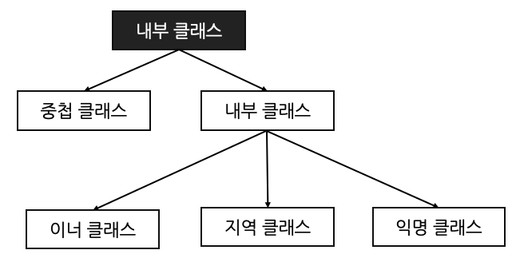

#List
중첩 클래스, 내부 클래스
#1 중첩 클래스와 내부 클래스의 차이
#2 중첩 클래스
#3 내부 클래스
-3.1 inner class
-3.2 local class
-3.3 익명 클래스
#4 결론
*개인적인 공부 내용을 기록하는 용도로 작성한 글 이기에 잘못된 내용을 포함하고 있을 수 있습니다.
# 중첩 클래스, 내부 클래스
중첩 클래스 (Nested Class) 와 내부 클래스 (Inner Class) 란, 이름에서 유추할 수 있듯이 클래스 내부에 선언된 클래스를 의미한다.
일반적으로 클래스를 선언할 때는 아래와 같이 별도의 클래스 파일을 생성한다.
하지만 만약 ClassB 내부의 필드가 ClassA 내부 에서만 사용되거나 긴밀한 관계를 맺고 있다면 ClassB 를 ClassA 내부에 작성하여 내부 클래스 형태로 만든다.
public class ClassA {
class ClassB {...}
}
#1 중첩 클래스와 내부 클래스의 차이
클래스 내부에 선언된 클래스는 다음과 같이 중첩 클래스 [nested class] 와 내부 클래스 [inner class] 로 나눌 수 있다.
그러나 중첩 클래스와 내부 클래스를 굳이 나누지 않고 합쳐서 내부 클래스 라고 부르기도 한다.

중첩 클래스와 내부 클래스의 가장 큰 차이점은 외부 클래스 (내부 클래스를 포함하고 있는 바깥 클래스) 의 자원에 접근할 수 있냐는 점이다.
중첩 클래스 [nested class] 는 외부 클래스의 인스턴스에 소속 되지 않는다. 따라서 사실 별개의 클래스 라고 볼 수도 있다.
반면 내부 클래스 [inner class] 는 외부 클래스의 인스턴스에 소속된다. 그렇기에 내부 클래스는 외부 클래스 안에 소속되는 하나의 구성 요소 이다.
#2 정적 클래스
정적 클래스의 특징은 다음과 같다.
- static keyword 가 붙는다.
- 외부 클래스의 정적 필드에만 접근 가능하며, 인스턴스 필드에는 접근 불가능하다.
- 외부 클래스의 인스턴스에 소속되지 않는다.
public class OuterStaticNestedClass {
private static int outerClassValue = 1;
private int outerInstanceValue = 2;
static class nestedInnerClass {
public void print() {
System.out.println("outerClassValue = " + outerClassValue);
// System.out.println("outerInstanceValue = " + outerInstanceValue);
}
}
}public class OuterStaticNestedMain {
public static void main(String[] args) {
// 정적_중첩_클래스는 외부_클래스의 인스턴스에 속하지 않기에 아래 코드가 없어도 정상 동작한다.
// OuterStaticNestedClass outerStaticNestedClass = new OuterStaticNestedClass();
// 외부_클래스.정적_중첩_클래스 변수명 = new 외부_클래스.정적_중첩_클래스()
OuterStaticNestedClass.nestedInnerClass nestedInnerClass = new OuterStaticNestedClass.nestedInnerClass();
nestedInnerClass.print();
}
}[output] outerClassValue = 1
정적 중첩 클래스는 외부 클래스의 인스턴스에 속하지 않는다. 따라서 외부 클래스의 인스턴스 생성 없이도 바로 접근이 가능하다. (이는 static class의 객체 생성 없이 내부 필드에 바로 접근 가능한 것과 동일한 원리이다.)
정적 중첩 클래스에 접근할 때는 "외부_클래스.정적_중첩_클래스 변수명 = new 외부_클래스.정적_중첩_클래스()" 형태로 접근한다.
* 만약 외부 클래스의 인스턴스 자원을 사용할 일이 없다면 내부 클래스의 접근 제어자를 static 으로 설정하여 정적 중첩 클래스로 만드는 것을 권장한다.
#3 내부 클래스
내부 클래스는 static 키워드가 붙지 않으며, 클래스 내부에 선언된 클래스를 의미한다.
내부 클래스와 정적 클래스의 가장 큰 차이점은 내부 클래스는 바깥 클래스의 인스턴스에 "소속" 되기에, 바깥 클래스의 인스턴스 멤버 자원에 접근할 수 있다는 것이다.
따라서 바깥 클래스의 인스턴스 생성 없이 정적 클래스에 접근할 수 있었던 것 과는 달리, 내부 클래스에 접근하기 위해서는 반드시 바깥 클래스의 인스턴스 생성이 선행 되어야만 한다.
또한 선언 위치에 따라 inner class, local class, anonymous class 로 구분한다.
-3.1 inner class & instance class
외부 클래스의 멤버 필드 선언 위치에 선언한다. 외부 클래스의 인스턴스 멤버 처럼 사용 하기에 instance class 라고 부르기도 한다.
내부 클래스의 접근하는 방식은 다음과 같다.
바깥 클래스 참조 변수".new 내부클래스()
public class OuterClass {
private static int outerClassValue = 1;
private int outerInstanceValue = 2;
// 이너 클래스
class Inner {
public void print() {
System.out.println("outerClassValue = " + outerClassValue); // 정적 변수 접근 가능
System.out.println("outerInstanceValue = " + outerInstanceValue); // 인스턴스 변수 접근 가능
}
}
}public class OuterMain {
public static void main(String[] args) {
// "내부 클래스" 는 "외부 클래스"의 인스턴스에 속하기에, "외부 클래스"의 인스턴스가 반드시 먼저 생성 되어야 한다.
OuterClass outerClass = new OuterClass();
// "바깥 클래스 참조 변수".new 내부클래스()
OuterClass.Inner inner = outerClass.new Inner();
inner.print();
}
}[output]
outerClassValue = 1
outerInstanceValue = 2
-3.2 Local Class
지역 클래스는 메서드 내부에서 선언되는 클래스로 지역 변수와 같은 성질을 가진다.
메서드 안 에서만 사용 되기에 별도의 접근 제어자를 사용할 수 없으며, 특정 메소드 내부에서만 사용하는 로직을 캡슐화 하는 경우에 사용된다.
public class OuterClass {
public void process() {
int localValue = 1;
class LocalClass {
int localClassValue = 2;
public void print() {
System.out.println("localValue = " + localValue);
System.out.println("localClassValue = " + localClassValue);
}
}
LocalClass localClass = new LocalClass();
localClass.print();
}
public static void main(String[] args) {
OuterClass outerClass = new OuterClass();
outerClass.process();
}
}localValue = 1
localClassValue = 2
-3.3 Anonymous Class
익명 클래스는 이름에서 유추할 수 있듯이, 클래스 이름이 존재하지 않고 구현부만 존재하는 클래스이다. 대체로 프로그램 내부에서 한 번 사용한 후 다시 사용될 일이 없는 로직을 익명 클래스 형태로 선언한다.
단, 익명 클래스를 생성할 경우에는 반드시 익명 클래스가 상속받을 "상위 클래스" 혹은 "인터 페이스" 가 필요하다.
다음 코드는 마치 Anonymous interface 라는 인터페이스 객체를 생성하는 것 처럼 보인다. 하지만 자바에서 인터페이스를 생성하는 것은 문법적으로 불가능하다.
이는 Anonymous 인터페이스 내부의 print 메서드를 실제로 구현한 익명 클래스를 생성한 예제이다.
public interface Anonymous {
void print();
}package nested;
public class Outer {
public void process(){
Anonymous anonymous = new Anonymous() {
@Override
public void print() {
System.out.println("hello anonymous!");
}
};
anonymous.print();
}
public static void main(String[] args) {
Outer outer = new Outer();
outer.process();
}
}hello nov!#4 결론
내부 클래스를 특별한 클래스 라고 생각할 수 있지만, 단순히 클래스 내부에 선언되는 클래스라는 점을 제외하면 일반적인 클래스와 사용 방법이 크게 다르지 않다.
for문이 중첩 되었다고 해서 문법이 달라지지 않는 것 처럼 말이다.
이처럼 내부클래스는 두 클래스 간 밀접한 관계를 가지고 있는 경우에 사용하면 좋다. 여기서 밀접한 관계가 의미하는 바는 대표적으로 내부 클래스의 자원들이 외부 클래스 안에서만 사용되는 상황이 있다.
내부 클래스를 사용하는 이유
1. 강력한 캡슐화
내부 클래스에 private 접근 제어자를 사용하면, 바깥 클래스 안으로 완벽하게 내부 클래스를 숨길 수 있다.
또한 캡슐화를 이용해 외부로 부터의 접근을 차단하며, 내부 클래스는 바깥 클래스 내부에 존재하기에 별도의 제약 없이 바깥 클래스 자원에 접근할 수 있다.
2. 물리적, 논리적 그룹화
앞서 말했듯이 한 클래스가 특정 클래스 안에서만 사용된다면 굳이 클래스를 분리하는 것 보다 두 클래스를 묶어서 관리하는 것이효율적이다.
단순하게 생각해 보아도 두 개의 클래스 파일로 나눈 뒤 인스턴스 객체를 생성하여 사용하는 번거로운 작업을 수행하는 것 보다, 하나의 클래스 안에서 관리하는 것이 유지보수 측면 에서도, 코드 가독성 측면 에서도 효율적이다.